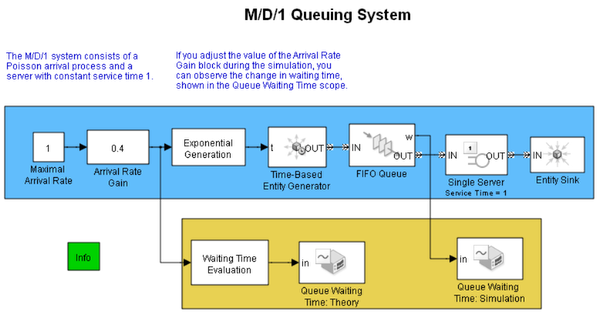
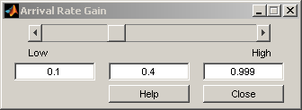
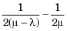
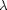

M/D/1 Queuing System
Contents
Overview
This model contains a single-queue single-server system having a Poisson arrival process and a server with constant service time. The queue has an infinite storage capacity. In the notation, the M stands for Markovian; M/D/1 means that the system has a Poisson arrival process, a deterministic service time distribution, and one server.
Structure
The model includes the components listed below:
- Time Based Entity Generator block: It models a Poisson arrival process by generating entities (also known as “customers” in queuing theory).
- Exponential Interarrival Time Distribution subsystem: It creates a signal representing the interarrival times for the generated entities. The interarrival time of a Poisson arrival process is an exponential random variable.
- FIFO Queue block: It stores entities that have yet to be served.
- Single Server block: It models a server having a constant service time.
This model is similar to the M/M/1 Queuing System model, except that the service time in this model is constant.
 Results and Displays
The model includes these visual ways to understand its performance:
- A Display block that shows the waiting time in the queue
- A scope showing the number of entities (customers) in the queue at any given time
Theoretical Results
According to queuing theory, the mean waiting time in the queue equals

where  is the arrival rate and  is the service rate. This duration is half the theoretical mean waiting time in the queue for the M/M/1 queuing system with the same arrival rate and service rate.
is the service rate. This duration is half the theoretical mean waiting time in the queue for the M/M/1 queuing system with the same arrival rate and service rate.
Experimenting with the Model
Move the Arrival Rate Gain slider during the simulation and observe the change in the mean waiting time using the Display block labeled Queue Waiting Time.
Related Examples
References
[1] Kleinrock, Leonard, Queueing Systems, Volume I: Theory, New York, Wiley, 1975.